无题
Metasurface-Based Photodetectors: Pursuing Superior Performance and Multifunctionality
光的变革力量在于捕捉、处理、解释光的能力，而光电探测器在其中扮演重要角色。（backbone）
各个领域取得突破，从彻底改变通信、改良成像精度到增强生物医学传感，持续性扩大光科学的前沿。
随着光系统的持续发展，光电探测器也需要不断提高灵敏度、检测速度、光谱覆盖范围（improve sensitivity, detection speed, spectral coverage）to keep up with the growing complexity of modern applications.
比如：
在高速光通信中，必须以最小的延迟传输大量数据，光电探测器在将光信号转换为电信号以进行实时处理方面起着至关重要的作用。为了实现这一目标，现代光网络需要具有高响应性、快速响应时间和低噪声的光电探测器（high responsibility, fast response time, low noise），以确保稳定、高速的数据传输。(stable, high speed data transmission. )
除了通信，生物医学成像技术，如光学相干断层扫描和荧光显微镜，依赖于光探测器捕获从生物组织散射的弱光信号。 这些应用需要高灵敏度和良好的信噪比性能来捕捉细微的生物特征，这对于早期疾病检测和实时生理监测至关重要。
同样，在环境监测和遥感中，光电探测器被用来探测不同光谱波段的微弱光信号，以分析大气气体、污染水平和地表变化等信息。 许多这些应用依赖于红外探测，其中远程稳定性和高光谱选择性对于获得精确测量至关重要
困难：
材料限制了在宽光谱范围内的光吸收效率，而速度和灵敏度之间的权衡使得在不牺牲信号质量的情况下优化响应时间变得困难。material limitations restrict the efficiency of light absorption over a broad spectral range, while the trade-off between speed and sensitivity poses difficulties in optimizing response time without sacrificing signal quality.
现代光学技术日益要求光电探测器不仅能从入射光中提取强度信息，还能提取偏振、光谱和时域信息。
该领域的一个关键挑战是设计紧凑、高性能的光电探测器，在保持高性能的同时实现多功能检测。
超表面可以精确地操纵光场的振幅、相位、偏振和光谱特性，从而优化光电探测器的响应率、响应速度和光谱范围。
幅度调制：超表面通过与入射光共振、改变局部场强和改变透射光或反射光来实现幅度调制。金属材料中是等离子激振，包括局部表面等离子激振（LSPR）和表面等离子激振（SPPs）；介电材料是米氏共振。米氏共振包含一系列光学模式，包括基本模式，如电偶极子和磁偶极子共振，以及高阶模式，如电四极子和磁四极子共振。 这些共振模式可以通过修改超表面的尺寸来调谐。
此外，当多种模式干涉时，超表面可以表现出更复杂的共振现象，称为范诺共振。
相位调制：包括三种主要机制：共振相位、几何相位和传播相位调制。
偏振调制：对于线偏振光，偏振调制主要源于结构的各向异性。对于圆偏振光，几何相位机制是关键。 当圆偏振光与超表面相互作用时，相位变化与结构单元的旋转角度直接相关。 通过设计特定的旋转角度，可以为左手和右手圆偏振光（LCP和RCP）引入对称和相反的相移，从而实现对光手性的选择性控制。
光谱调制：超表面通过色散效应和多模态共振实现光谱整形，从而实现特定波长的选择性增强、抑制和分离。
虽然基于iv族合金（如GeSn）和低维材料（如石墨烯）的光电探测器具有宽带运行和非冷却性能等优势，但它们的探测效率通常仍低于传统半导体器件。
高性能光电探测器
高响应率光电探测器
2021年，Zhou等人将金超表面整合到基于gsn的探测器上，利用等离子共振来增强响应性。特别是，金纳米孔超表面在2 μm处的响应率提高了50%，而金属光栅结构的响应率提高了3倍。 然而，等离子体超表面存在固有的光学损耗，并对CMOS兼容性构成挑战，导致效率和成本限制。 为了解决这些挑战，Zhou等人利用介电纳米孔超表面开发了一种GeSn/Ge光电探测器，如图3a所示 在宽带照明下，超表面在特定波长形成共振，导致光吸收增强。 在共振波长处，吸收效率增加14.5倍，如图3b所示。 此外，由于薄的有源层，该器件有效地抑制了暗电流，在2 μm下实现了4 × 109 cm·Hz1/2/W的比探测率。此外，通过调整纳米孔的周期性，可以调节共振波长。 随着纳米孔周期的增加，超表面共振呈现蓝移，如图3c所示。

石墨烯是一种由单层碳原子组成的狄拉克半金属，具有零带隙电子结构和高载流子迁移率，使其在光电检测应用中具有很高的前景。然而，它的低吸收和短载流子寿命限制了石墨烯基光电探测器的响应性，这仍然是实际应用的关键障碍。 虽然将石墨烯与半导体材料集成形成异质结可以提高器件的响应性，但这种异质结构中有限的内置电场阻碍了石墨烯中光生载流子的有效分离，从而限制了其零带隙特性的好处。
为了提高石墨烯基光电探测器的响应性，2022年，Jiang等人将超表面结构引入石墨烯/半导体异质结光电探测器中，设计出石墨烯/硅光栅光电探测器，如图3d.所示 该装置由绝缘体上的硅衬底、硅光栅和顶部沉积的石墨烯层组成。 由于Mie共振，在硅光栅的侧壁处产生局域电场，其场强明显高于石墨烯/半导体界面处的内置电场。 因此，硅/二氧化硅界面处的石墨烯经历了增强的表面电位，促进了硅捕获光生空穴并促进载流子分离，如图3e，f所示。 该器件在1550 nm处达到240 A/W，在2700 nm处达到25 A/W，比没有超表面的同类器件提高了100倍。
此外，Jiang等人通过引入狭缝阵列和加入栅极来优化超表面结构，如图3g所示。在二维狭缝阵列内，局域电场诱导出势阱分布，形成势阱。 此外，在狭缝的交点处形成具有强局域场的热点，如图3h所示。 这些热点处的强电场提高了光生载流子的分离效率。 同时，在远离热点的石墨烯/硅界面，调节栅极电压可增强内置电场，进一步促进载流子分离，如图3i所示。 利用这两种机制，器件的响应率显著提高，在4 μm波长处达到7.5 A /W。
宽带光电探测器
传统的窄带探测器受限于其有限的光谱范围，难以同时覆盖紫外到中红外光谱，这使得它们不适合多波段、多场景的探测。 另一方面，宽带探测器在单个设备中集成了多波段探测能力，有效地捕获更丰富的光谱信息，为分析和表征复杂的光场提供了基础。
传统方法通过调整材料带隙或优化吸光层来扩大光谱覆盖范围；然而这些方法通常只能带来适度的性能提升。引入基于金属-绝缘体-金属（MIM）结构的多共振模式设计为宽带检测提供了一种解决方案。
2020年，Hainey Jr.等人提出了一种基于″拼接型″元表面的量子阱红外光电探测器（QWIP） 通过在单个晶胞内引入多种尺寸的方腔，并将其与MIM结构集成，该设计实现了多种共振模式的协同运行，如图4a所示。 每个腔在特定波长范围内支持不同的谐振模式。 多个空腔的联合响应有效地拓宽了器件的光谱覆盖范围，如图4b、c所示。 实验结果表明，该设计可以覆盖传统QWIP响应光谱的90%以上，而具有均匀腔尺寸的传统设计只能利用约60%的光谱范围。 该研究有效地展示了多模态共振在光谱展宽方面的潜力，为宽带光电探测器的未来发展提供了有价值的见解。
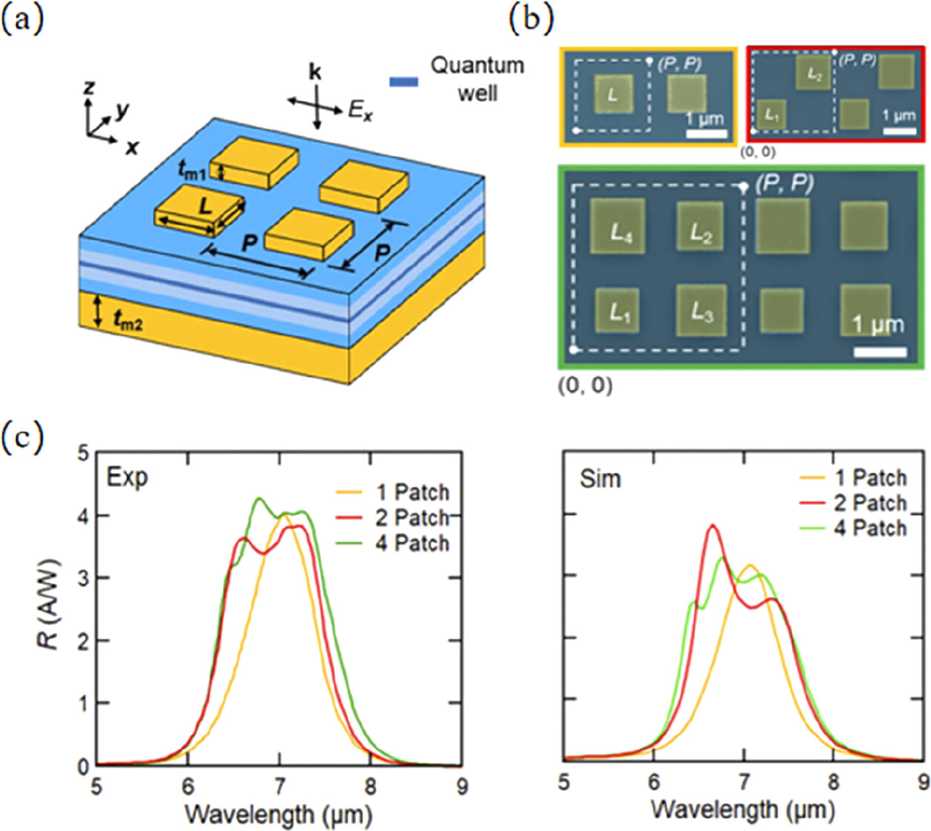
2023年，Lien等人进一步扩展了基于MIM设计的宽带响应。黑磷-二硫化钼（BP-MoS2）异质结与MIM结构相结合，在单个单元胞内结合不同宽度的金属光栅线以支持多种共振模式。 此外，Lien等人对光栅宽度和间距进行了优化，使光谱在3 ~ 5 μm中波红外范围内展宽。 该方法不仅进一步验证了多模态共振的有效性，而且通过金属光栅的结构调制证明了光谱控制的灵活性和可调性，为实现更多功能的宽带光电探测器奠定了基础。
高速光电探测器
高速光电探测器是现代光子技术不可或缺的组成部分，旨在有效地捕获和处理快速变化的光信号。 高速光电探测器的性能直接影响系统对高频和短脉冲信号的响应，使其在高速通信、超快动态成像和科学仪器等应用中必不可少。 然而，传统光电探测器受到材料载流子迁移率、寄生电路参数和器件结构不理想等因素的限制，难以满足超快信号检测的需求。 这些限制在大数据通信和高分辨率成像等场景中尤为明显，在这些场景中，提高光电探测器的速度已成为重中之重。
高速光电探测器的发展主要集中在两个关键参数：响应时间和带宽。 减少的响应时间增强了光电探测器跟踪快速变化的光信号的能力，而扩大的带宽允许检测更高频率的成分。 实现这些改进的具体方法包括采用具有高载流子迁移率的材料，优化电极设计以最小化电容效应，以及结合微/纳米结构以提高光电转换效率。 超表面技术的最新进展显示出高速光电探测器的发展潜力。 具有特殊设计的亚波长结构的超表面可以增强光和材料之间的相互作用，同时最大限度地减少光学和电子元件中的延迟效应。
集成了超表面的石墨烯光电探测器也在高速探测方面取得了进展。
2024年，Koepfli等人报道了一种超宽带石墨烯光电探测器，该探测器利用了超表面共振增强和石墨烯的高载流子迁移率，在器件小型化和高速检测能力方面取得了突破。如图5g所示，该器件由金属反射层、氧化铝间隔层、单层石墨烯片和金属偶极子天线阵列组成。 该器件的带宽性能得益于石墨烯材料、超表面结构和栅极电压调谐的综合效应。 虽然石墨烯的超快载流子动力学理论上支持超过300 GHz的带宽，但精心设计的超表面集成可以实现电极附近的强场定位和吸收，有效缩短载流子提取路径。 此外，精确的栅极电压控制将石墨烯的掺杂水平从p型调制到n型，优化了内置电场分布，确保了高效的载流子分离。 这种结合结构和静电的优化使器件达到实验验证的500 GHz带宽，如图5h所示。 此外，通过修改超表面谐振腔的长度，可以灵活调整谐振波长，使中心探测波长在1400 ~ 4200nm之间调谐，如图5i所示。 这项工作证明了石墨烯-超表面光电探测器在实现高性能方面的巨大潜力，为高速探测提供了新的设计策略，并为光通信和成像领域的应用奠定了技术基础。
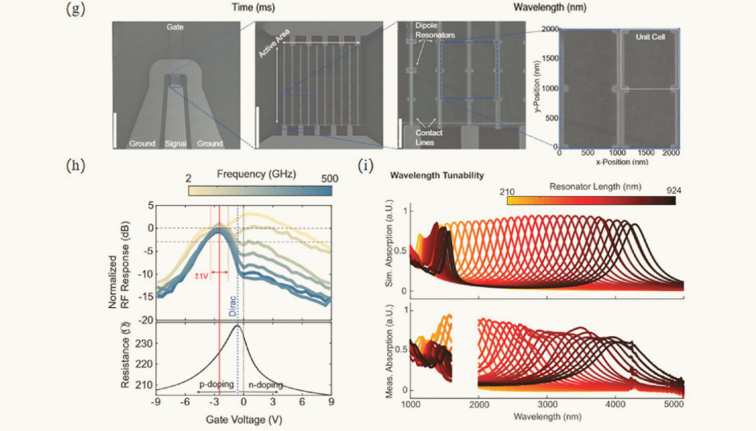
多功能光电探测器
极化探测器
光电转换通常采用光伏或光导效应，要求超表面的等离子体共振峰与活性材料的带隙匹配。 这种限制对扩展工作波长范围提出了挑战。 一种有希望的替代方案是将金属超表面与热电材料集成，利用光热电（PTE）效应将超表面的偏振敏感光学响应转换为电信号，同时绕过材料带隙的限制。
2020年，Wei等人展示了沉积在石墨烯上的t形超表面，利用PTE效应实现了中红外范围内的线性偏振检测。在这项工作的基础上，Chen等人设计了一种基于石墨烯的偏振探测器，该探测器包含一个金属圆盘超表面，超表面增强了局部场浓度，诱导了与极化相关的温度梯度，从而产生热电响应。 同时，金属结构充当栅极来调制石墨烯的电子特性，从而提高太赫兹范围内的响应性。
高维光场探测器
光场包含丰富的信息，包括强度、波长、偏振和角度。 传统的光电探测器通常只测量强度，而前面讨论的偏振和光谱探测器将探测能力扩展到强度之外，包括偏振或光谱信息。通过集成神经网络解码算法，基于超表面的光电探测器可以并行检测波长、偏振、角度等多维参数。
2024年，Jiang等人将双臂金属超表面集成到石墨烯光电探测器中，开发了一种多维光场探测装置，如图10a所示。所设计的超表面对1.55 μm和4 μm的LCP和RCP光表现出明显的共振特性，产生了四种可识别的光响应状态，如图10b，c所示。 通过对这四种响应方式进行编码，可以根据输出信号的极性和幅值重构双波长圆偏振光的波长和偏振状态，如图10d、e所示。 此外，通过将器件修改为三端口配置（图10f），并应用机器学习技术处理来自每个端口的电信号，该器件能够精确地重建在1.55、4和7 μm入射圆偏振光下的波长和偏振状态，如图10g−j所示。 该设计结合了简单的制造工艺和高检测灵敏度，为多维光场传感提供了一种有效的策略。
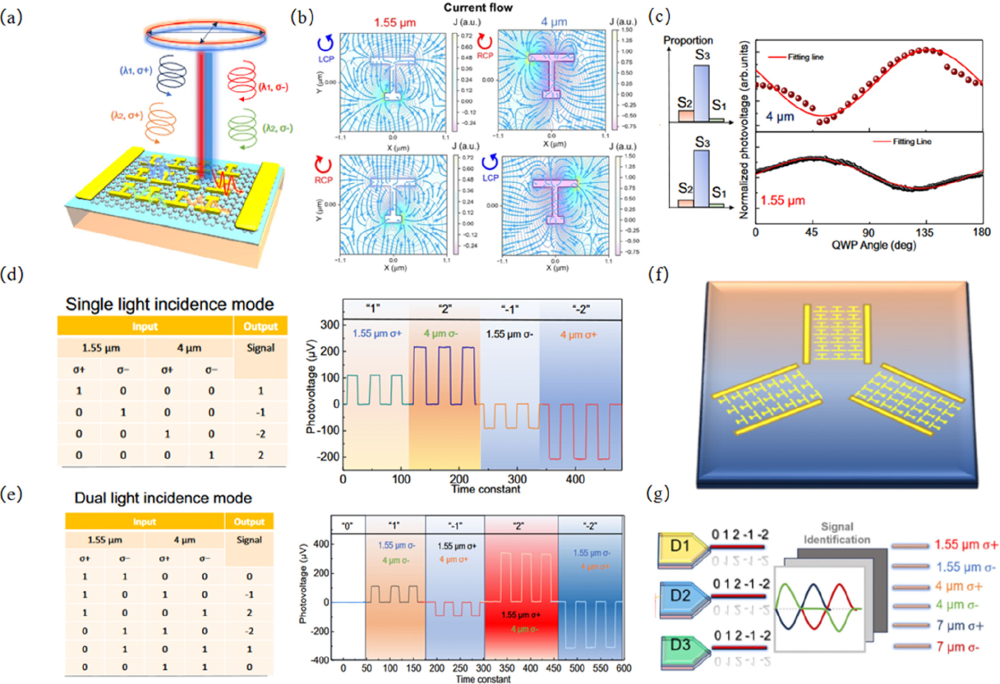
Advanced optical polarizers based on 2D materials
光学偏振器是光学系统中选择和控制光偏振态的重要部件。 在过去的十年中，光子技术和器件的快速发展导致了一系列新型光学偏振器的发展，为许多突破和扩展应用在不同领域开辟了道路。 特别是，二维（2D）材料，以其原子薄膜结构和独特的光学特性而闻名，对于实现具有高性能和新特性的光学偏振器变得具有吸引力，这在以前是无法实现的。 本文综述了基于二维材料的光学偏振器的最新研究进展。 首先，概述了实现光学偏振器的各种二维材料的关键特性。 其次，对基于二维材料的最先进的光偏振器进行了回顾和比较，将其分为空间光器件、光纤器件和集成波导器件。 最后，我们讨论了该领域当前的挑战以及未来技术进步的令人兴奋的机会。
光电子工业的快速发展迫切需要在不同的设备平台上和在更长的波长上使用高性能的光学偏振器，这对基于块状材料的传统光学偏振器提出了重大挑战。 自2004年首次实验分离石墨烯以来，二维（2D）材料家族迅速发展，并已成为科学探究的温床。 许多二维材料与它们的块状材料相比，以其非凡的材料特性而闻名。 其中，二维材料吸引人的光学特性，如层依赖的光学带隙、强量子约束效应、可调谐的光发射、高光学非线性和显著的材料各向异性，已经成为广泛研究兴趣的基石，用于实现功能光学器件。
在这里，我们对基于2d材料的光学偏振器进行了系统的回顾，强调了该领域取得的重大进展，并提供了不同平台上器件的性能分析。 本文的组织如下：首先，介绍二维材料在光学偏振器中的应用。 随后，对不同类型的基于二维材料的光偏振器进行综述和比较，将其分为空间光器件、光纤器件和集成波导器件。 最后，我们讨论了该领域目前面临的挑战，以及为未来技术突破铺平道路的充满希望的前景。
光学偏振器用二维材料的性质
具有原子薄膜厚度的二维材料对不同偏振态的光表现出各向异性吸收，这是其应用于光偏振器的基础13。 如图2a所示，与面外偏振（即光场E垂直于二维材料表面）的光相比，二维材料通常对面内偏振光（即其光场E平行于二维材料表面）具有更高的吸收，从而实现更强的光-物质相互作用。 对于基于2d材料的光学偏振器，不同偏振状态下光的吸收差异决定了偏振消光比。
此外，二维材料的其他一些特性在增强器件功能方面也起着重要作用。 例如，希望二维材料在高透射率极化状态下具有低光吸收，以最大限度地减少它们引起的额外插入损耗（IL），并且通过栅极电压或光功率改变材料特性的能力使器件具有动态可调谐性。 在本节中，我们概述了图2b中所示的典型二维材料的独特特性，重点介绍了那些与实现高性能光学偏振器特别相关和有利的特性。
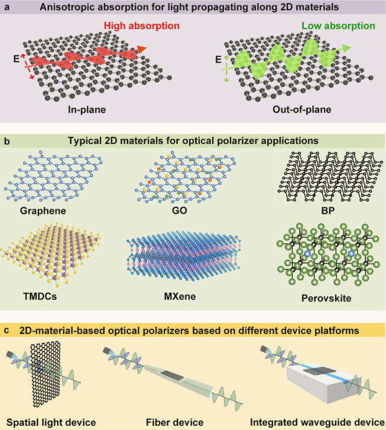
Graphene
石墨烯由单层碳原子组成，排列成六边形晶格，其中线性色散导电带和价带在布里渊带的狄拉克点相遇，形成具有线性电子色散和各向同性光导张量的无间隙半金属带结构。 这种独特的结构使石墨烯具有在不同方向和超远光带宽上与光波相互作用的能力。尽管石墨烯的光学导电张量是各向同性的，但入射光与石墨烯晶格结构之间的相互作用导致了与晶体轴平行和垂直方向的光的吸收强度不同，从而为实现光学偏振器奠定了基础。
尽管单层石墨烯的薄膜厚度只有~0.35 nm，但它能吸收垂直入射光功率的~2.3%，这种吸收会给基于石墨烯的光学偏振器带来过多的插入损耗。 由于带内跃迁及其与表面等离子体共振相关的特性，石墨烯还可以与太赫兹（THz）光波强烈相互作用，使其有望用于在该光谱范围内工作的光学偏振器。由于石墨烯等离子体的无间隙带结构和低载流子密度，其光谱范围通常局限于中红外区域。 为了获得更宽的光谱范围，可以利用其他极化子，如声子和激子。 此外，石墨烯的零带隙可以通过外加电场或化学掺杂来进一步调谐，从而实现其特性的灵活变化，从而提高器件性能。
Graphene oxide
氧化石墨烯（GO）是石墨烯的常见衍生物，由碳原子的基面上装饰有一系列含氧官能团（ocfg），如羟基、羧基和羰基36。 由于ocfg的存在，单层氧化石墨烯薄膜具有比单层石墨烯更高的厚度，其典型厚度为~ 1nm。 ocfg还产生了高度异质的原子结构，这使得它对具有面内和面外偏振的光表现出强烈的各向异性吸收。 石墨烯在水中的溶解度非常低，除非在强酸的帮助下才会溶解，而氧化石墨烯可以很容易地分散在水溶剂和极性溶剂中，这是由于亲水性OCFG的存在，这为基于溶液的合成过程提供了便利。 这种各向异性光吸收随薄膜厚度的增加而逐渐减小。 氧化石墨烯的大光学带隙，通常在2.1到3.6 eV之间，可以通过各种还原和掺杂处理来改变，从而允许在各种光谱带上进行光吸收工程。 与零带隙的石墨烯相比，氧化石墨烯的大带隙也导致了更低的光吸收，特别是在红外波长。 氧化石墨烯的这些材料特性，结合其简单的基于溶液的合成工艺和直接生长在不同介质衬底上的能力，有助于在氧化石墨烯上实现光学偏振器。
过渡金属二硫化物（TMDC）
过渡金属二硫族化合物（TMDCs）的表征为通式MX~2~，其中“M”代表过渡金属，“X”代表硫元素。它们具有典型的三明治状结构，其中一个金属原子平面两侧是两个六边形的硫原子平面。 这种受量子约束效应显著影响的独特结构使得TMDCs表现出不同的带隙（例如，从1到2.5 eV）以及当材料厚度从多层变为单层（例如，典型厚度为~0.72 nm的MoS2）时引起间接到直接的带隙转变。 TMDCs在可见光到红外波段的光吸收方面也表现出显著的各向异性（每层>10%）。 与石墨烯相比，单层TMDCs在打开带隙和产生不等效带隙方面面临限制，由于其直接带隙，单层TMDCs表现出独特的谷相关特性，其中具有特定偏振态的光可以在特定的谷中激发电子跃迁。 例如，可以观察到，右圆偏振光和左圆偏振光可以分别在K和K '点（即，六边形晶格系统中布里渊区的两个非等效角）有效地激发电子，从而允许对这些材料中的偏振态进行敏感控制。最近，包括二硫化铼（ReS2）、二硒化钯（PdSe2）、二硒化铂（PtSe2）和二碲化钯（PdTe2）在内的贵金属基TMDCs由于其出色的各向异性光吸收能力也被用于偏振敏感器件。
Black phosphorus
黑磷（BP），通常被称为单层的黑磷烯，具有层状的原子结构，磷原子排列在皱褶的蜂窝晶格中。 与石墨烯和TMDCs的面内中心对称性相反，bp独特的褶皱结构打破了面内中心对称性，从而产生了各向异性的面内光学导电性。 结果表明，BP中的光吸收对沿不同方向传播的平面光波表现出各向异性，并受到薄膜厚度、掺杂水平和扭曲角度等因素的影响。 此外，BP中含有各向异性激子（电子-空穴对），具有很强的结合能，在室温下具有显著的稳定性，这也导致了其光学吸收的各向异性。 BP具有层相关的带隙，对于一个典型的厚度为~0.50 nm的单层薄膜而言，根据体积不同其带隙范围为~0.3 eV到2.0eV，有效地覆盖了可见光到近红外波长。 这种多功能性使设计针对特定波长波段的光学偏振器成为可能。由于环境条件下氧气和水分引起的化学降解，BP暴露在空气中会出现不稳定性，这给其实际应用带来了潜在的挑战。 为了解决这种限制，已经采用了几种方法，包括有机功能化、无机涂层和通过液相剥离合成。
MXenes
MXenes是一类由过渡金属碳化物、氮化物或碳氮化物组成的新型二维材料。 MXenes的通式为M~n+1~X~n~T~x~，其中M表示过渡金属，x表示C和/或N元素，T表示表面末端，如-OH，=O和-F，n=1, 2或3。 这些表面末端增强了MXenes的亲水性，使其易于在水和其他极性溶剂中分散，从而形成稳定的胶体溶液。 MXenes的亲水性有利于它们在各种衬底上的沉积，显示出简单器件制造的潜力。根据化学元素组成的不同，单层MXene薄膜的典型厚度从1到3nm不等。由于其独特的归因于过渡金属碳化物或氮化物骨架中的自由电子的金属导电性，MXenes呈现出引人注目的电子结构。 这与它们的表面终止相结合，导致光学吸收的强各向异性，覆盖从可见光到中红外（MIR）区域的宽带。与石墨烯的带内跃迁相似，MXenes在太赫兹范围内的强光学吸收使其成为先进的太赫兹光学偏振器。 此外，MXenes的特性还通过调节其表面功能化的能力得到了丰富，这使得它们的带隙可以在0.05到2.87 eV的宽范围内调制。
Perovskites钙钛矿
钙钛矿的特点是层状结构，由单（或多）无机薄片夹在有机间隔层之间，由库仑力固定在一起。 它们有一个通式R~2~A~n-1~B~n~X~3n+1~，其中R是一个额外的大块有机阳离子，如脂肪族或芳香族，它在无机层之间起间隔作用，决定了无机层的数量，并决定了钙钛矿膜的厚度，A是有机阳离子，B是金属阳离子，X代表卤化物（Cl−，Br−或I−）。由于存在交错的无机和有机薄片，钙钛矿材料具有可调的带隙，可以通过改变其组成来修饰。 例如，随着无机层数的增加，PEA~2~MA~n−1~Pb~n~I~3n+1~的带隙从~2.36 eV （n = 1）减小到~1.94 eV （n =∞）。由于钙钛矿具有很高的光伏效率和在整个太阳光谱上的强光吸收，钙钛矿在太阳能电池中得到了广泛的应用。此外，钙钛矿晶体结构固有的非中心对称性使其具有很强的光学各向异性，可用于偏振光的探测或发射，这使其在偏振选择器件中的应用成为可能。 此外，钙钛矿材料表现出环境稳定性，因为有机成分可以提供疏水性和机械柔韧性，而无机成分提供结构坚固性和耐化学性。
范德瓦尔斯异质结构
探索超越单一材料的使用，将不同的二维材料组装成范德瓦尔斯（vdW）异质结构，为光子和电子器件引入了许多新的特性和可能性，其中也包括光学偏振器。 与传统的体异质结构相比，当结合不同晶格常数的材料时，在界面处存在晶格发射和缺陷，由于二维材料固有的倾向于通过vdW力粘附，vdW异质结构可以解决这些挑战。 此外，界面可以是原子界别尖锐的，厚度可以薄到几个原子层。 通过结合各种2D材料的不同特性，如各向异性电导率、直接带隙和强光-物质相互作用，vdW异质结构可以克服特定2D材料的缺点。 例如，黑磷等二维材料容易环境降解或机械性能不足。 通过将它们集成到vdW异质结构中，可以显著提高复合结构的稳定性和耐久性，因为更具弹性的材料可以为那些更容易受到影响的材料提供保护。 vdW异质结构还可以更有效地操纵光偏振态。 例如，基于石墨烯/二硫化钼异质结构的光学偏振器比基于石墨烯的光学偏振器的光吸收增强了1.75倍。 此外，设计vdW异质结构的灵活性使光学响应和工作波长范围能够定制。 这允许裁剪偏振器的性能参数和扩大其潜在的应用。
不同设备平台上基于2d材料的光学偏振器
二维材料的无粘结悬垂表面允许它们很容易地结合到不同的设备平台中，而不会由于晶格不匹配而产生应力或限制。为了实现基于二维材料的光学偏振器，已经提出并展示了基于不同平台的各种器件，每种器件都具有独特的优势和限制。在本节中，我们回顾并比较了这些光偏振器的性能，根据图2c所示的器件平台，将其分为空间光器件、光纤器件和集成波导器件。
空间光器件
二维元阵列组成的超表面已被广泛用于控制光波的各向异性传播。通过将石墨烯层整合到金属超表面或利用纯石墨烯基超表面，可调谐太赫兹偏振器已经实现。
2017年，Kim等人通过将石墨烯层纳入由亚波长金属构件组成的手性超表面，实验证明了对太赫兹波的有效极化操纵（图3b）。 在这种器件中，施加到石墨烯上的栅极电压选择性地调节了右手圆偏振光的传输，而不影响左手圆偏振光的传输，从而允许在~2 V的低栅极电压下实现大强度调制深度。 与图3b中石墨烯片横跨整个金属超表面的器件相反，孟等人实验展示了一种基于石墨烯-金属超表面的可调谐太赫兹空间光偏振器，石墨烯丝网格位于金属超表面上（图3c）。 首先制作金属图案以沉积Ti/Au层，然后通过湿转移工艺将石墨烯转移到金属阵列上，并通过氧等离子体蚀刻形成线网格结构。 石墨烯与金属元件交错的器件增强了太赫兹波-等离子体共振耦合，通过调节栅极电压可将PER从~3.7到 ~10.3 dB之间调谐。
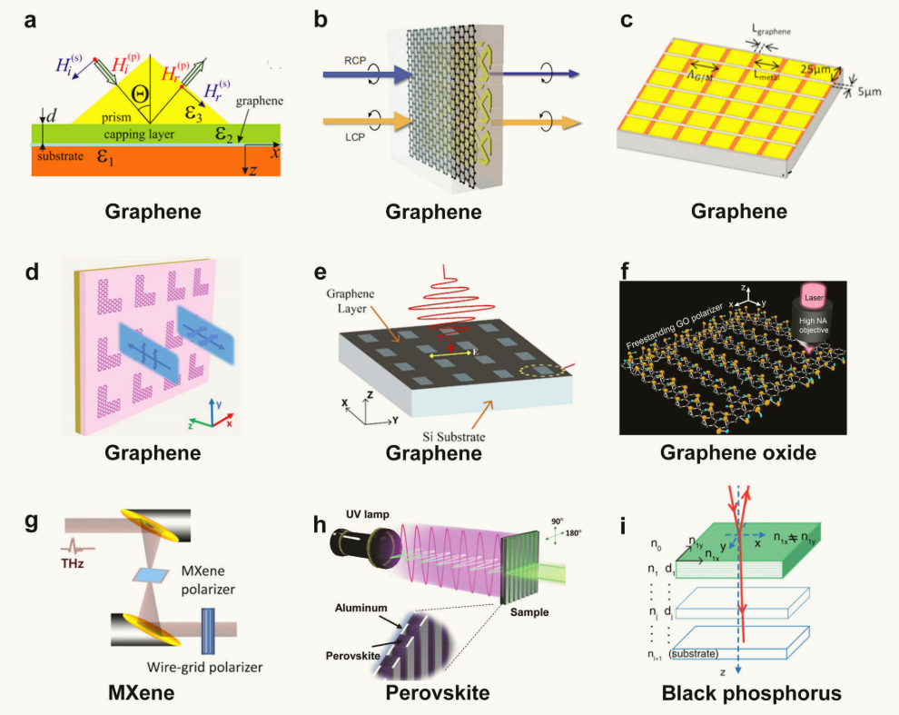
虽然使用金属元结构可以增强光-石墨烯的相互作用，但它们也面临着诸如复杂的制造和高成本等限制。 为了解决这一问题，研究了一些基于纯石墨烯超表面的太赫兹光学偏振器。 通过在介电层顶部放置一组矩形或L形石墨烯贴片来形成超表面，提出了太赫兹光学偏振器（图3d）。 由于石墨烯的强等离子体行为，矩形石墨烯贴片有助于线极化波在透射过程中转化为圆形或椭圆偏振波，而L形石墨烯贴片使线极化波在反射过程中转化为交叉极化波。 此外，从理论上研究了一种工作频率在1.81-3.81太赫兹范围内可调的太赫兹光学偏振器（图3e），其中硅衬底上的石墨烯带状阵列通过TM偏振光，并由于石墨烯的表面等离子体共振而阻挡了TE偏振。 通过在该器件中采用双级石墨烯层状结构，实现了高达~30 dB的优化PER。 同样，利用石墨烯带的表面等离子体共振来选择TM偏振光，提出了太赫兹石墨烯线栅光学偏振器101。 仿真结果表明，在0.8 ~ 2.5太赫兹的宽频率范围内，平均PER为~ 30db， IL低至~ 2db。
光纤器件
光纤偏振器提供在线偏振控制，并在光纤系统中找到直接应用。 光纤设备在传感和光通信等应用中非常有效，在这些应用中，保持长距离偏振光的完整性至关重要。 传统的光纤偏振器通过加入与倏逝光纤光场具有偏振选择性耦合的双折射晶体或金属来实现对飞行偏振态的选择。 由于这些材料的固有局限性（例如，偏振模式色散和高插入损耗）和光纤偏振器的结构限制，这些器件在制造、带宽和可调性方面面临挑战。 相比之下，在宽波段具有高各向异性光吸收的二维材料的掺入可以提高偏振选择的效率，并改善光纤偏振器的OBW。 在图4中，我们总结了典型的采用二维材料的光纤偏振器。
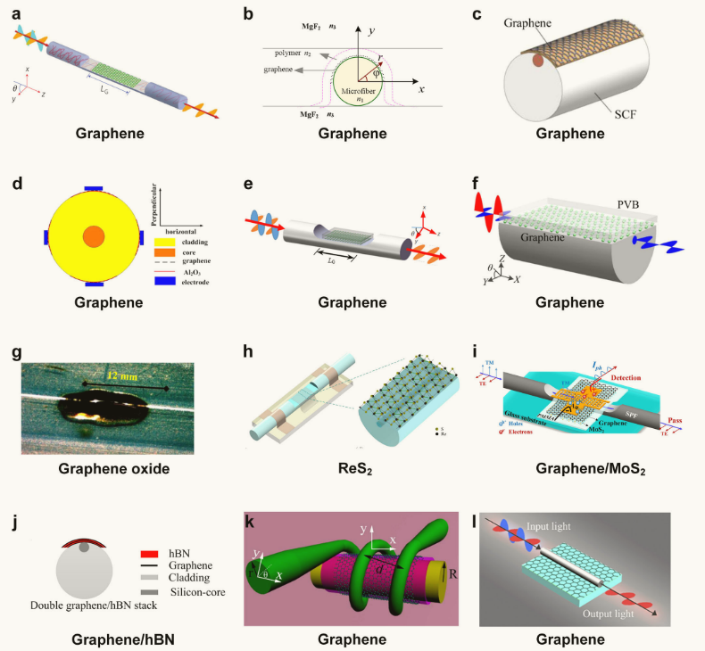
近年来，也报道了一些采用vdW异质结构的光纤偏振器。 一种由MoS~2~ /石墨烯/Au薄膜组成的光纤偏振器得到了~19 dB的高PER（图4i）。偏光镜是通过将石墨烯/MoS2/PMMA杂化膜湿转移到侧面抛光的纤维上，然后在石墨烯表面上使用掩膜对交错的Au电极进行图案化来制造的。 在该器件中，二硫化钼薄膜和Au指电极显著提高TMmode吸收，分别是仅用石墨烯的对比装置的1.75倍和24.8倍。
关于为这些光学偏振器选择的二维材料，大多数研究选择石墨烯，可能是因为它的发现更早，研究更广泛。 在过去的十年中，随着二维材料的研究和制造的快速发展，越来越多的二维材料被用于实现光学偏振器，它们显示出自己的优势，具有更广泛的应用范围。 一般来说，每一种二维材料都有其自身的优点和局限性，以实现高性能的光学偏振器，选择适当的二维材料应针对特定的场景。 例如，石墨烯具有宽带光吸收，这对于在宽光谱范围内的偏振控制很有用。 另一方面，它的强光吸收导致石墨烯基光学偏振器的高过量插入损耗。 对于氧化石墨烯而言，其特性的灵活性和易于制造有利于性能优化和器件制造，而在实际应用中需要考虑高光功率下氧化石墨烯的减少。 TMDCs具有独特的自旋谷极化特性，为极化调制提供了高效、超快的响应。 然而，一些TMDCs，如MoS2和WS2对高温和潮湿的环境条件很敏感，这可能导致它们的性能退化。 与石墨烯和TMDCs不同，BP具有很强的面内各向异性，可用于面内偏振控制。然而，通常需要额外的制造步骤来封装器件以防止退化。对于MXenes，其独特的金属导电性和可调谐的表面终端使太赫兹光偏振器具有超快的时间响应。 然而，一些MXenes，如Ti3C2Tx在环境条件下容易被氧化，它们的大规模生产仍然是一个挑战。 二维钙钛矿具有可调的带隙、高效的光吸收和易合成等优点，而有毒元素和高要求的封装技术可能给制造过程带来挑战。 该领域的未来发展取决于克服材料和平台的特定限制，从而为更通用和广泛应用的极化技术铺平道路。
尽管二维材料已经在光学偏振器和偏振敏感器件中得到了广泛的应用，但对增强这些器件性能的追求仍在继续。 为了进一步提高性能，主要有四种策略。 第一个涉及修改现有二维材料的性质（例如，通过优化其制造工艺）以增强其光学各向异性。 二是优化器件配置，促进光与各向异性二维材料之间更有效的相互作用。 除了硅、二氧化硅和聚合物波导用于集成二维材料的最先进的集成光学偏振器外，未来还可以探索一些其他集成平台，如氮化硅和铌酸锂。 三是探索新机制。 虽然大多数基于二维材料的光学偏振器依赖于二维材料的各向异性光吸收作为其潜在机制，但一些其他机制也被广泛利用，例如石墨烯中的表面等离子体共振和TMDCs55中的自旋谷极化。 在未来，二维材料的一些特殊光学性质值得进一步探索。 例如，hBN和α-MoO3作为天然双曲型材料，由于其介电常数沿不同轴方向的符号相反，具有非常高的各向异性，可用于实现光学偏振器。 通过控制二维hBN和MoS2的拓扑特性，可以控制谷偏振，从而有可能开发出高效的光学偏振器。 此外，探索二维异质结构中的量子约束和其他量子力学效应可以发现操纵光偏振的新方法。 最后，随着二维材料家族的快速扩张，结合新兴二维材料的光学偏振片也将有新的发展机会。
Recent Advances in Tunable Metasurfaces: Materials, Design, and Applications
超表面是一种由平面元原子构成的二维（2D）超材料，具有自由裁剪电磁波的奇异能力。 在过去的十年中，人们在开发各种活性材料并将其融入实际应用的功能器件方面做出了巨大的努力，将可调谐超表面的研究推向了纳米光子学的前沿。 这些活性材料包括相变材料（PCMs）、半导体、透明导电氧化物（tco）、铁电体、液晶（lc）、原子薄材料等，并具有快速开关速度、大调制深度、超紧凑性和在外部刺激下光学特性的显著对比等令人着迷的性能。 这些材料的集成为传统的无源纳米光子平台提供了实质性的可调性。 由各种外部刺激触发的具有多功能的可调谐超表面在材料选择和器件设计方面带来了丰富的自由度，可以根据需要动态操纵和控制电磁波。 随着物理学和设计方法的迅速发展，特别是在新兴机器学习（ML）算法的帮助下，该领域最近蓬勃发展。 本文综述了可调谐超表面在活性材料、调谐机制、设计方法和实际应用等方面的最新进展。 最后，我们对这个充满活力和快速发展的研究领域提出了未来的展望。
二维材料。 与块状材料相比，石墨烯和TMDCs等二维材料由于其强烈的光-物质相互作用和电子能带结构，可以集成到平面光学中。 例如，带间和带内跃迁通过静电门控在MIR和THz工作范围内实现了石墨烯在不同费米能量下的可调光学导电性 除了20万cm2/（V·s）的高载流子迁移率外，石墨烯即使在电刺激下也被认为是超快超表面的活性材料。图5c展示了一个可调谐的超表面，它通过改变栅极石墨烯和PIN二极管的片电阻来独立控制反射幅度和相位。此外，二维TMDCs中减少筛选导致室温下的激子。 激子共振引起原子薄的TMDCs的强吸收（>10 %），这可以被电改变。在此机制下，超薄WS2带片透镜的调制深度可达到30%以上。这个新兴的研究领域已经显示出将二维材料集成到超表面以提高调谐性能的前景。
Design and Development ofMetasurface Materials for Enhancing Photodetector Properties
近年来，基于超表面的光电探测器（metaphotodetectors）得到了广泛的发展和应用。 超表面是在过去十年中出现的具有独特性能的人造材料，而光电探测器是通过测量辐射材料电导率变化来量化入射电磁波信息的强大工具。 通过高效的微结构设计，超表面可以有效地调节电磁波的多种特性，并在全息投影、隐身、生物图像增强、生物传感和能量吸收等应用领域显示出独特的优势。 光电探测器在军事和民用应用中发挥着至关重要的作用； 因此，高效的光电探测器对于光通信、成像技术和光谱分析至关重要。 与传统光电探测器相比，异光探测器在灵敏度、噪声等效功率和小型化方面有了很大的提高。 本文从五个方面综述了变光探测器的优点。 此外，还系统地讨论了变光探测器在军事和民用等各个领域的应用。 强调了超表面在变光探测器中的潜在应用前景和发展趋势，为其发展提供了系统的指导，并确立了超表面技术的发展前景。
Photo Response
Chen等人成功构建了具有介电纳米孔阵列超表面的GeSn/Ge多量子阱（MQW）光电探测器，有效提高了短波红外光的低成本检测，实现了更高的检测精度（图2a，b） 通过优化超表面结构，光电探测器在2 μm波长处的响应率提高了10.5倍。 与传统的GeSn/Ge MQW光电探测器相比，三维带宽提高了35%。 理论预测表明，该光电探测器可以达到室温检测性能可媲美目前的商用短波红外光电探测器。 这一贡献验证了实现高性能光电检测与CMOS技术兼容的可能性，并为实现2 μm通信频段的低成本高效光电检测提供了新途径。
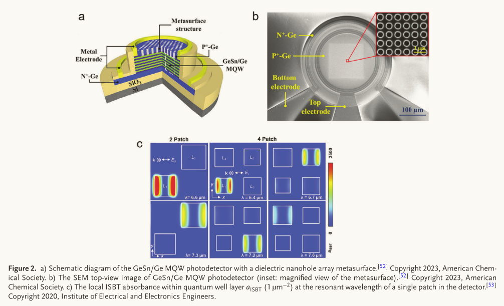
量子阱红外光电探测器以其高灵敏度和优良的信噪比而备受关注。 然而，传统qwip的吸收范围有限，因为它们只能通过导电带之间的子带跃迁（isbt）检测光信号，这限制了它们吸收垂直于量子阱表面的偏振光的能力。 为了解决这一限制，研究人员将qwip与等离子体腔结合起来，通过电磁场增强和腔内的极化旋转来提高吸收效率。 然而，这种方法仍然对探测器的吸收范围施加限制。 在最近的一项研究中，Hainey等人通过在单个亚波长周期内拼接不同的谐振腔，成功地将量子阱光电探测器的光谱响应范围扩大了1.5倍，同时保持了较高的探测性能（图2c） 这一成果对开发具有更复杂光学响应的下一代量子阱光电探测器具有重要意义。
石墨烯和其他二维材料具有许多优点，包括宽光谱吸收，高载流子迁移率和超快时间响应，使其成为光电探测器的理想选择。 然而，这些材料有限的光吸收能力在一定程度上限制了它们在光电探测器领域的应用。
Attarabad等人制作了与等离子体超表面集成的石墨烯光电探测器，有效克服了石墨烯光吸收能力不足导致的光电探测器的局限性（图3a） 该超表面由欧米茄形光学纳米天线组成，增强了光与石墨烯的相互作用，显著提高了光吸收能力。 通过控制超表面的几何参数，在1550 nm的通信波长处实现了宽带和可调谐的吸收峰，石墨烯的吸收功率提高到66%。 这种光电探测器在纳米传感、成像、光通信和生物医学监测等领域具有广阔的应用前景。
Fang等人通过使用分形树结构复制雪花的几何形态，制造了一个分形超表面。 然后，他们将这种分形超表面集成到石墨烯光电探测器上（图3b） 通过在石墨烯和金属之间的界面激发等离子激元振荡，他们实现了电磁波的局部增强，从而在石墨烯中产生了大量的电子-空穴对。 这些对的空间分离是通过内置电场（PV效应）和热电功率的差异（PTE效应）来实现的，从而产生可检测的光电压。 这种方法可以实现宽带和偏振不敏感的光电增强，在可见光谱中增强因子范围为8到13。 此外，该策略还可以扩展到与其他PV/PTE材料集成，提供良好的灵活性。
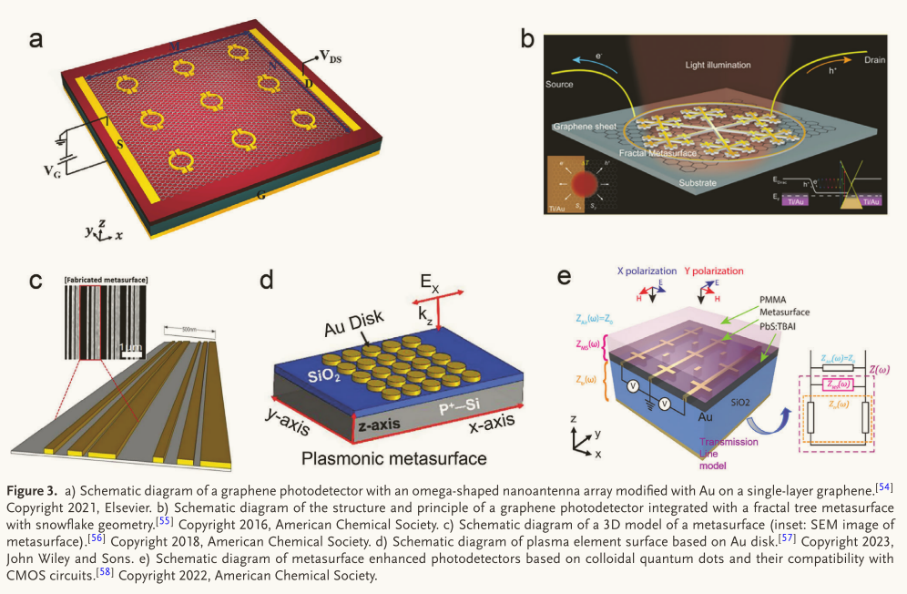
黑磷（BP）是一种范德华半导体材料，具有直接可调的带隙和各向异性光学特性，是制造中红外（MIR）光电探测器的理想选择。 然而，室温下bp的小光学吸收截面限制了当前基于bp的MIR光电探测器的性能，使其难以实现增益和响应时间的理想组合。
Yadav等人设计并制作了一种基于Au盘的等离子体超表面（图3d），该超表面在MIR区域（3.7 μm）表现出局部表面等离子体共振（LSPR），可以匹配bp的带边缘 通过将BP薄片集成到等离子体表面，他们成功地实现了光致发光的猝灭，从而创建了基于BP的MIR光电探测器，该探测器在入射波长为3.7 μm时有效地实现了495.85 mA W−1的峰值响应和超高的工作速度（>10 MHz）。 这为MIR地区的光电应用开辟了新的机会。
Polarization Sensitivity
Li等人开发了一种集成手性等离子体超表面的石墨烯-硅光电探测器，能够准确提取1550 nm红外偏振光的全偏振态（SoP）信息（图4c）。微像素的设计结合了四象限探测器最具成本效益的架构，有效地简化了偏振测量系统，并能够以几微米的分辨率分析光的SoP。 这种巧妙的设计在偏振成像和化学传感等应用中显示出巨大的潜力。

Miniaturization小型化
Ni等人开发了一种混合超表面光电探测器，结合了MoS2间隙模式和MoS2层上的金属纳米带阵列（图5b）。在这种结构中，每个金属金纳米带作为一个单独的间隙等离子体腔，选择性地增强了单层二硫化钼内光与物质之间的相互作用。 这有效地提高了光电探测器的偏振灵敏度和响应速度。 该研究证明了通过强电磁场约束和激子共振与间隙等离子体共振之间的共振耦合来控制先进性能的潜力。 它还强调了集成光学超表面作为一种提高基于二维材料的光电探测器性能的新方法的使用，为小型化和性能改进提供了巨大的潜力。

On-chip light control of semiconductor optoelectronic devices using integrated metasurfaces _compressed
Metasurface-enhanced photoresponsivity
通常用于设计超表面结构块的等离子体共振或Mie共振可以提供局部场增强，从而显着增加光吸收。 将纳米级共振与光电探测器材料相结合，可以大大提高光电探测器的光响应性。
Echtermeyer等人证明等离子体纳米结构可以将入射能量直接引导到p-n结。 通过将石墨烯与等离子体纳米结构结合，可以在石墨烯层上实现pn结区域的局部电场增强，并产生光电压增强，在等离子体共振处最大放大超过20倍。 类似地，一个高性能的二硫化钼光电探测器已经提出了通过集成一个间隙表面等离子体超表面。 光电探测器是通过将金属纳米条纹阵列集成到MoS2薄片上制造的（图6(a)）。 超表面的间隙-表面-等离子体共振与MoS2单层在650 nm左右的激子A共振相匹配，导致光-物质相互作用的选择性增强。
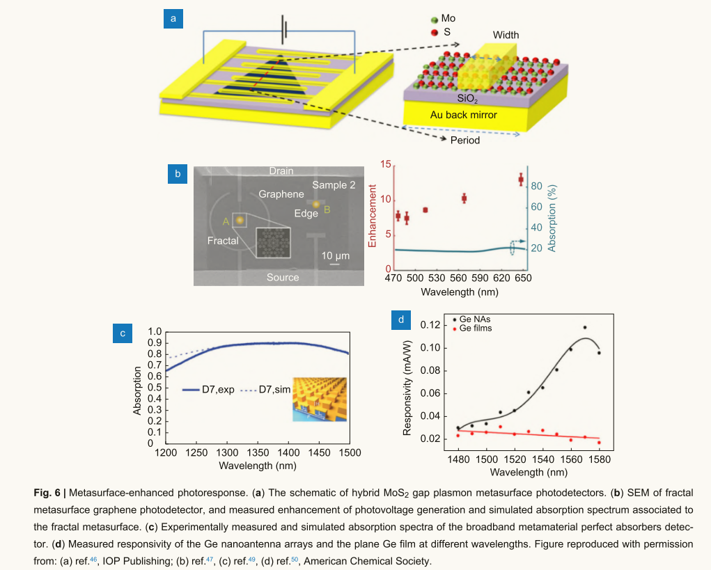
光电探测器响应性的显著提高通常发生在等离子共振频率处。 为了克服这一限制，使用具有宽带吸收和多共振的分形超表面来优化光电探测器的带宽。
Fang等人将石墨烯光电探测器与雪花状分形超表面集成在一起，实现了宽带和极化不敏感的等离子体增强。 图6(b)显示了所提出的光电探测器样品的SEM和在五个测量波长下的增强因子，在整个可见光谱上显示出8-13倍的改善。 有源光学天线结合了纳米天线和光电二极管的功能，可以将等离子体衰变产生的热电子转化为光电流，并且通过避免电子共振相互作用，带宽不再受半导体材料带隙的限制。
Metasurface-enabled wavelength selective detection
通过控制等离子体纳米结构的共振频率，可以定制器件的光谱响应，以放大特定波长的响应，从而可以用于区分入射光的波长。
Liu等人通过集成金属等离子体纳米结构和石墨烯光电探测器，展示了一种多色光电探测器。 由于近场增强，等离子体纳米结构可以在选定的等离子体共振频率下局部增加光响应，从而使石墨烯光电探测器具有色敏响应。 通过控制结构的尺寸、形状和周期性，可以实现具有不同共振频率的等离子体纳米结构。 支持Mie共振的纳米柱阵列和半导体纳米线也可用于光谱检测，其共振峰可以通过调节柱的大小来调节。
Graphene
石墨烯具有高电子迁移率、优异的机械强度和导热性，在光子学和光电子学领域具有巨大的应用潜力。 在本节中，我们将重点关注具有改进功能的石墨烯集成超表面，包括可调谐的光学响应（谐振频率，吸收和相位），波前调制，以及增强的非线性效应。
Mousavi等人通过实验证明，单层石墨烯可用于调谐等离子体超表面的法诺共振。 两个垂直天线之间的近场耦合导致低q偶极和高q四极模式的出现（图10(a)）。 两个共振路径之间的干扰导致了光谱中典型的不对称范诺特征。 通过在法诺共振超表面上放置一层化学掺杂的单层石墨烯，可以在中红外波段实现可调谐的蓝移。 这种位移是由超表面和石墨烯之间的电感耦合引起的，这种耦合可以通过静电门控来控制。 实验证明了共振的蓝移约为30 cm−1。
Yao等人演示了使用石墨烯作为电可调谐负载的天线原位控制。 提出了一种等效电路模型来定量分析调谐行为。 在中红外波段，调谐共振范围超过650 nm （140 cm−1，约10%的共振频率），强度调制范围超过30%（约100 cm−1，约8%的中心频率）。 由于其相对较宽的等离子共振84和较弱的吸收，石墨烯具有有限的调制深度。
为了增加调制深度，Dabidian等人将单层石墨烯与高q的fano谐振超表面集成（图10(b)），实现了中红外反射率高达90%的调制深度。 平行于石墨烯表面的电场增强导致石墨烯/超表面强耦合，可以将等离子体共振偏移约一半的光谱宽度，从而导致反射红外光的电子控制深度调制。
为了提高调制速度，Zeng等人展示了一种基于可调谐超材料吸收体的混合石墨烯超表面调制器（图10©）。 仅需要几伏特的栅极偏置就可以调制石墨烯的电导率，从而实现高达90%的高调制深度和大于1 GHz的调制速度。 将混合石墨烯超表面调制器形成像素阵列，形成高帧率空间光调制器原型，为实现红外区波前工程提供了可能。
与此同时，研究人员试图通过将石墨烯与超表面耦合来实现太赫兹调制。 Shi等人通过将石墨烯与宽带太赫兹超表面耦合，证明了有效的太赫兹调制（图10(d)）。 利用石墨烯作为具有可调电导率的有源负载，可以显著增强本场增强，并且可以强调制太赫兹波的传输。
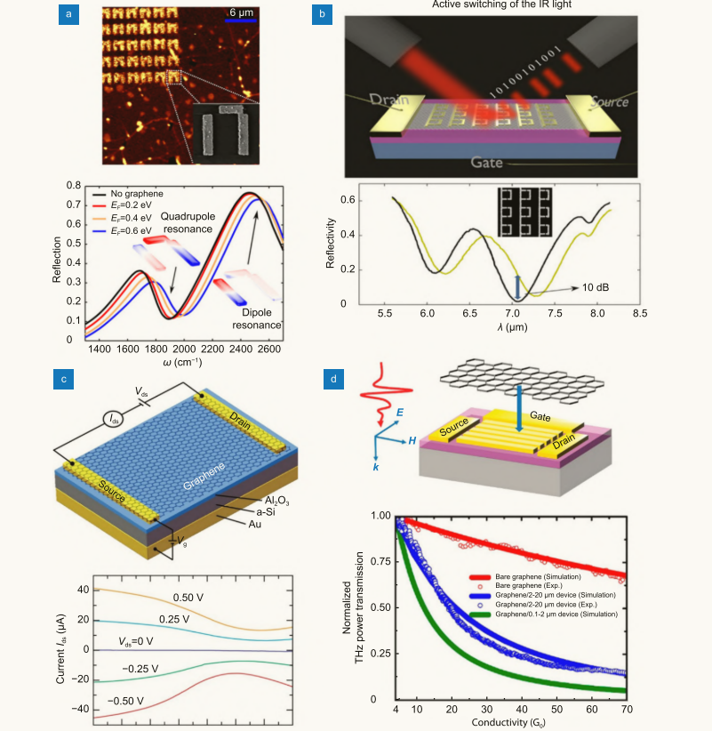
石墨烯集成的超表面吸收剂可以动态调节吸收。
Yao等人演示了一种高速可调谐超表面吸收器，其调制深度可达100%（图11(a)），该吸收器将石墨烯上的超表面集成到不对称法布里-珀罗谐振器中。 超表面吸收剂由金属薄膜、介电层和石墨烯上的电可调超表面组成。 这种超表面吸收器不需要磁响应，大大降低了设计的复杂性。
除了改变栅极电压外，Tasolamprou等人还通过实验证明了一种超快的光可调谐吸收调制器（图11(b)）。 吸收器由均匀生长的石墨烯片堆叠在SU-8介电基片上组成，该基片由金属接地板接地。 利用太赫兹时域光谱系统耦合红外泵浦激光器进行光激发，可以动态调节样品中石墨烯片的电导率，衰减为2.79 ps，吸收调谐为40%。 除了实现可调谐的共振频率、幅度和吸收外，石墨烯与超表面的集成还可以用于调谐电磁波的相位、极化和其他参数，例如实现宽带可调谐门控太赫兹相位调制和可重构极化转换。 石墨烯集成超表面可用于控制光的波前，包括异常折射、聚焦透镜和艾里光束等。 通过调整石墨烯结构的尺寸，仿真验证了动态可调振幅和相位响应。 已经提出了具有动态调谐能力的波前控制函数。
除了这些理论工作外，Kim等人还通过实验证明了一种用于调制异常折射波的门控太赫兹超表面（图11©），该超表面是通过将石墨烯集成到由u形孔组成的超表面上形成的。 通过精心设计空间相位分布，可以通过改变栅极电压有效地调制异常折射太赫兹波的振幅。

Transition metal dichalcogenides (TMDs)
tmd是一类具有层状结构的材料，由两个硫族元素原子层(如硫(S)、硒（Se）或碲（Te）等和一个过渡金属原子层（如钼（Mo）、钨(W)等）组成，形成X-M-X夹层结构。 化学式通常表示为MX2。 由于其直接的带隙电子结构和强的光-物质相互作用，tmd具有强的激子效应、大的自旋轨道分裂和圆二色性，在PL、非线性、波前调制等光电应用中表现出优异的性能。 集成tmd的超表面能够操纵CP光子的发射。
Lin等人展示了厚度约为50 nm的tmd的CP光发射（图12(a)），其中单层WSe2与等离子体手性超表面集成。 偏振态是通过光子与手性超分子的耦合来控制的。 PL的圆二色性可以从- 26%调到+20%。 利用tmd -超分子混合平台，圆二色性从- 6%增强到- 26%，是光学圆二色性增强的4倍以上。 同样，Ni等人将间隙表面等离子体元表面与单层二硫化钼集成在一起，以控制极化增强激子-等离子体激元发射（图12(b)）。 在金属氧化物-半导体结构下，在二硫化钼中实现了门可调谐激子等离子体极化子发射，展示了通过超表面技术主动操纵光-物质相互作用的能力。 一些研究将tmd单层与谐振介质纳米结构集成在一起，以控制发射指向性和或增强定向发射。 Bucher等人探索了全介电谐振超表面的潜力，通过改变MoS2单层的光子和电环境以及周围的地形来操纵光相互作用（图12©）。 已经证明了一种有效的平台，可以从衬底平面外的独立tmd单层获得强发射，允许使用简单的低na光学器件进行光收集。
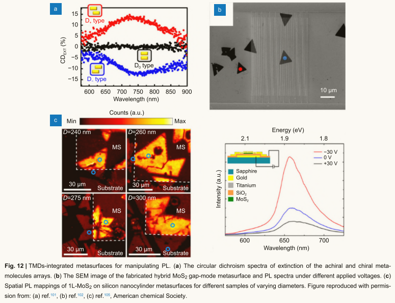
集成tmd的超表面为非线性光子学提供了一个理想的平台，可以潜在地提高受原子厚度限制的单层tmd的弱非线性转换效率。 许多研究集中在利用光学微腔、波导和超表面来增强tmd的二次谐波发射。
Shi等人展示了一种二维倍频相干光源，利用单层TMDs和表面等离子激元的谐振器模式的有效面内耦合，单层WS2的二次谐波产生（SHG）增强了400倍（图13(a)）。 这种显著的增强可归因于纳米沟槽中等离子体场的强约束。 通过改变槽深，可以调节共振条件和耦合强度。 连续介质中束缚态的概念为实现高质量因子的尖锐共振开辟了一条新途径。
Bernhardt等人证明了二维材料耦合到介电超表面的准bic共振时SHG的急剧增强（图13(b)）。 将WS2单层放置在具有破面内反转对称性的硅超表面上，以达到临界耦合状态，平衡辐射损失率和其他损耗，以提供最大的场增强。 放置在超表面衬底上的单层相对放置在块状硅衬底上的单层表现出至少1140倍的SHG增强。 将单层TMD与局部旋转的等离子体纳米棒结合，形成混合Pancharatnam-Berry相位超表面，用于向SHG信号添加额外的相位信息，并实现可调谐的几何相位和场增强(图13©和13(d))。

Hexagonal boron nitride (hBN)
hBN是一种具有层状晶体结构的化合物，由氮和硼原子组成，排列成六角形的蜂窝状图案。 它是一种支持低损耗双曲声子极化子（HPPs）的天然双曲介质，显著降低了极化子传播中的损耗。
Folland等人提出了一种由hBN异质结构组成的与单晶二氧化钒（VO2）直接接触的可重构双曲超表面（图14）。 VO2中的金属畴和介电畴提供了局部介电环境的空间局域变化，使得HPP能够在相变材料畴边界发射、反射和传输，并将HPP在hBN中传播的波长调谐1.6倍。 这种方法提供了平面内HPP传播的可重构控制。
为了满足多光谱伪装需求，Buhara等人提出了一种由ITO-hBN光栅构成的混合纳米天线架构。 在ITO和hBN中同时激发等离子体声子极化子，导致近红外范围内的宽带吸收，中红外和低红外范围内的反射。
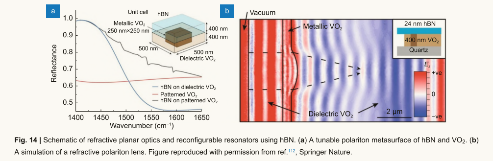
BP
BP是一种具有层状结构的新型二维直接带隙半导体材料，由于其独特的光电性能而备受关注。
Huang等人通过纳米结构BP碳化物薄层开发了中红外超表面，实现了深亚波长尺度下混合等离子体模式的有效激发（图15(a)）。 混合等离子体模式表现出两种分裂光学模式的反交叉行为，这归因于等离子体与中红外有源光子之间的法诺共振。 这些结果表明，BP碳化物的内在面内各向异性可以为设计等离子体性能提供一个平台，从而导致光-物质相互作用可以在动态可重构方向上进行操纵的新自由度。 利用强光-物质相互作用引起的光吸收增强，通过将吸收增强的等离子体超表面与BP光电探测器相结合，提出了一些混合光电探测器(图15(b)和15©)，以提高光响应性。 此外，可以直接在器件的衬底上制作介电超构透镜，以增加BP光电探测器对信号的收集。 结果表明，超构透镜提高了中红外波段多个测试波长下的性能（图15(d)）。 光电流和响应度比没有超构透镜时高约6.65倍。
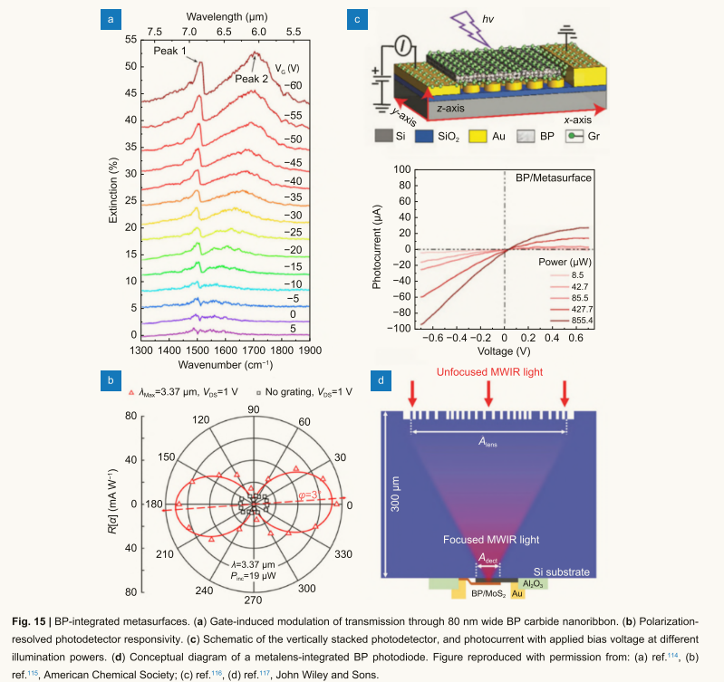